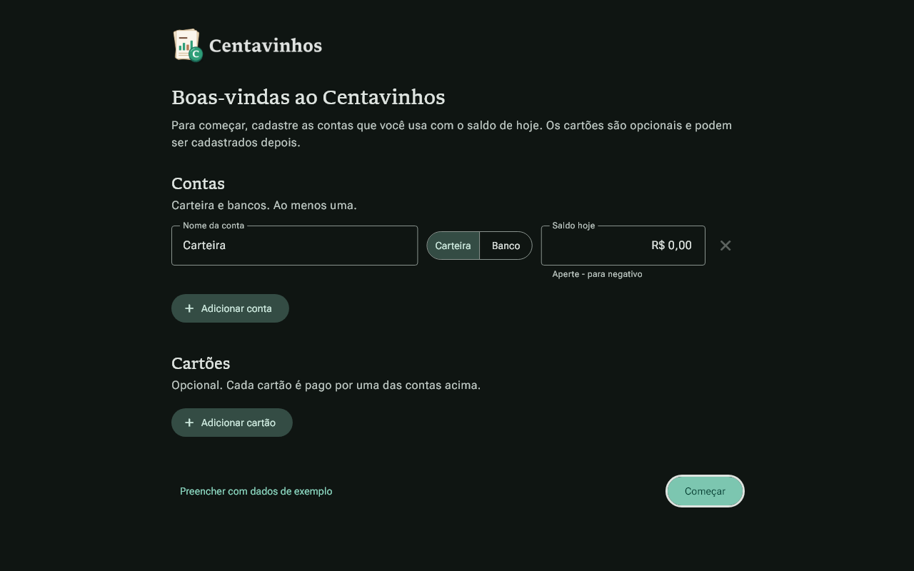
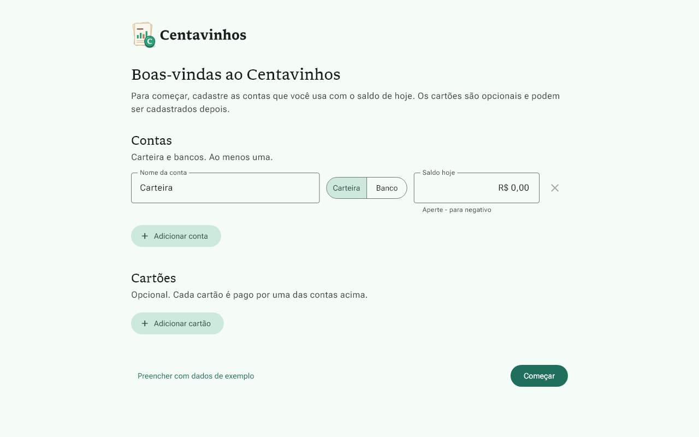
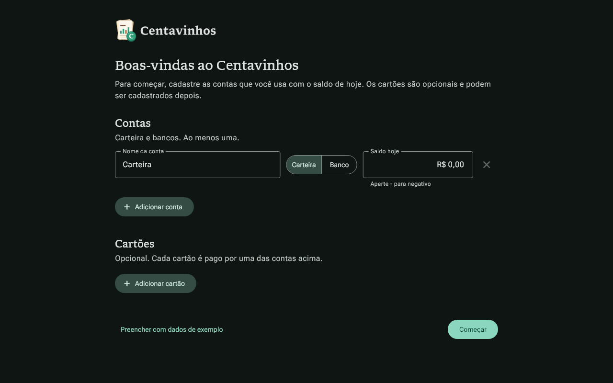
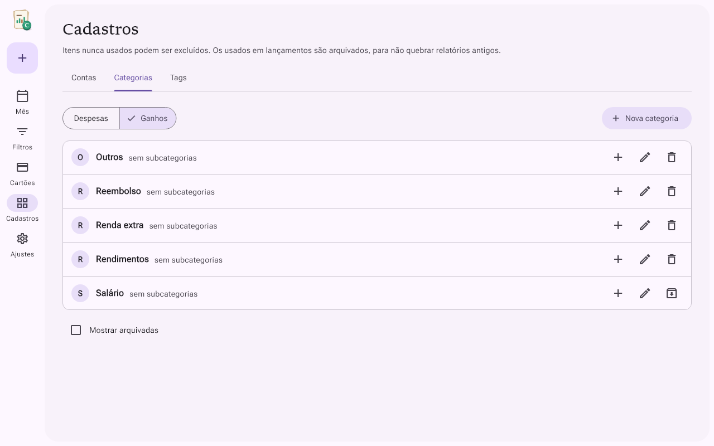
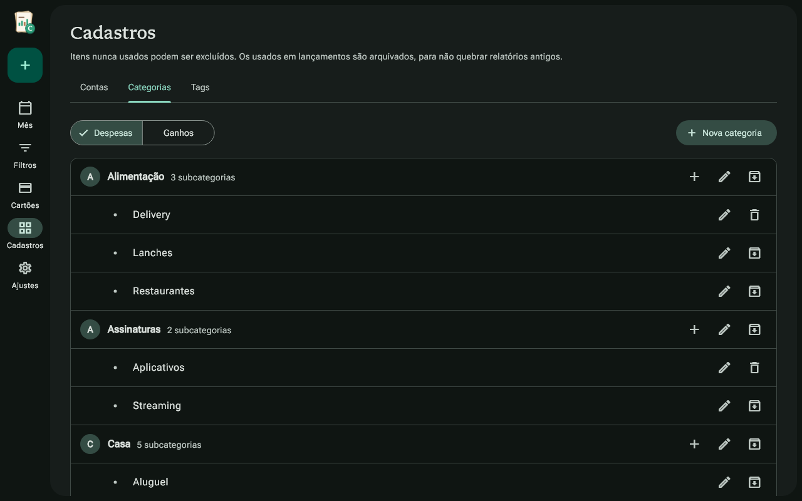
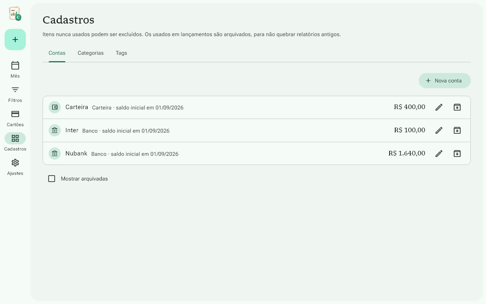
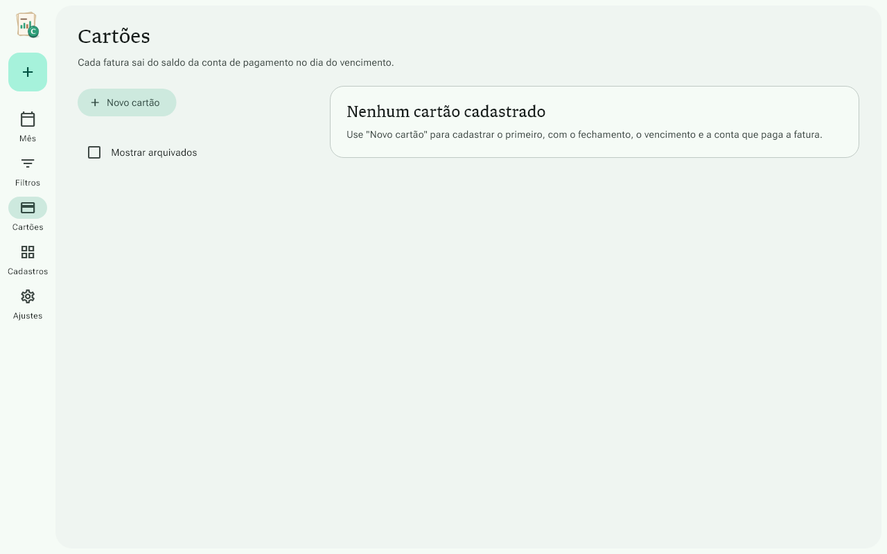
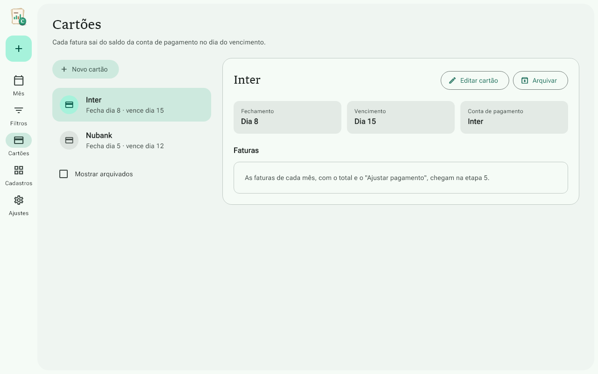
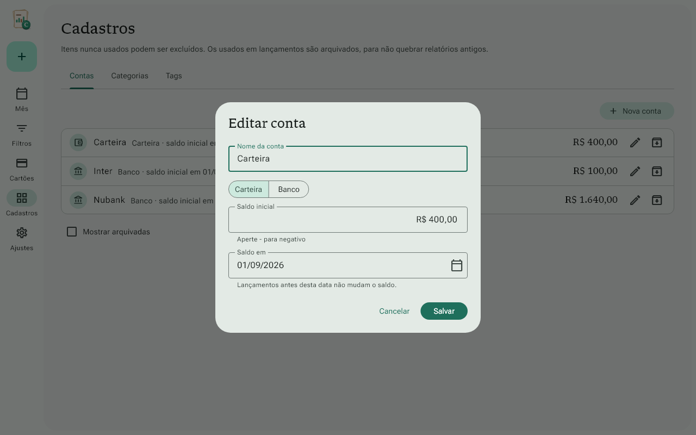

Centavinhos · Etapa 2
Gerado em 15/10/2026 12:26
flutter analyzeSem problemas
Testes137 de 137
Novos nesta etapa72
Capturas de tela19
Testes
Regras (lib/domain)50 de 50
- test/domain/cadastros_test.dart
- ✓novonomes limpa espaços nas pontas e repetidos
- ✓novonomes tag perde o # do começo
- ✓novonomes comparação ignora maiúsculas e acentos
- ✓novomotivoNomeInvalido nome livre passa
- ✓novomotivoNomeInvalido nome vazio
- ✓novomotivoNomeInvalido repetido entre os ativos
- ✓novomotivoNomeInvalido repetido com um arquivado sugere desarquivar
- ✓novomotivoNomeInvalido tag compara sem o #
- ✓novolerDiaDoMes de 1 a 31
- ✓novolerDiaDoMes fora da faixa ou vazio
- ✓novomotivoParaNaoTirarConta conta livre pode sair
- ✓novomotivoParaNaoTirarConta última conta ativa fica
- ✓novomotivoParaNaoTirarConta conta que paga cartão ativo fica
- ✓novomotivoDataSaldoInvalida hoje e dias anteriores servem
- ✓novomotivoDataSaldoInvalida futuro não serve
- ✓novomotivoDataSaldoInvalida data inválida
- ✓novotextos de contagem subcategorias
- ✓novotextos de contagem uso de tags
- test/domain/data_digitada_test.dart
- ✓novodd/mm completa com o ano de hoje
- ✓novodd/mm/aaaa
- ✓novoaceita dia e mês com um número só e espaços
- ✓novodatas que não existem
- ✓novo29/02 só em ano bissexto
- ✓novotextos que não são data
- test/domain/dinheiro_e_datas_test.dart
- ✓formatarCentavos valores pequenos
- ✓formatarCentavos milhares
- ✓formatarCentavos negativo com o sinal de menos tipográfico
- ✓datas dia e mês no formato do banco
- ✓novodatas dia no formato da tela e leitura do formato do banco
- test/domain/valor_caixa_eletronico_test.dart
- ✓digitar começa em R$ 0,00
- ✓digitar cada número entra pela direita, como no escopo
- ✓digitar vírgula, ponto e letras são ignorados
- ✓digitar agrupa milhares
- ✓digitar para no limite de 11 números
- ✓apagar backspace tira o último número
- ✓apagar apagar tudo volta para R$ 0,00
- ✓colar "12,50" vira R$ 12,50
- ✓colar aceita o símbolo e os milhares
- ✓colar texto sem centavos é lido como reais
- ✓colar um número só depois da vírgula vira dezena de centavos
- ✓colar texto sem números não muda o valor
- ✓colar valor acima do máximo não muda o valor
- ✓colar sinal de menos é ignorado sem permiteNegativo
- ✓colar sinal de menos vale com permiteNegativo
- ✓troca de sinal "-" deixa negativo e mostra −R$
- ✓troca de sinal "-" de novo volta para positivo
- ✓troca de sinal com o campo zerado, o sinal fica guardado para os próximos números
- ✓troca de sinal apagar com o valor zerado tira o sinal
- ✓troca de sinal "-" é ignorado sem permiteNegativo
- ✓troca de sinal começa com valor negativo quando permitido
Banco36 de 36
- test/data/cadastros_test.dart
- ✓novomigração banco da versão 1 ganha a coluna arquivada em tags e mantém as tags
- ✓novocontas cria e edita com saldo inicial e data
- ✓novocontas lista as ativas primeiro, em ordem de nome sem ligar para acentos
- ✓novocontas conta nova não está em uso; com lançamento, transferência ou cartão, está
- ✓novocontas exclui a conta nunca usada e arquiva a usada
- ✓novocontas não arquiva nem exclui a última conta ativa
- ✓novocontas não arquiva a conta que paga um cartão ativo
- ✓novocartões cria e edita fechamento, vencimento e conta de pagamento
- ✓novocartões exclui o cartão nunca usado
- ✓novocartões cartão usado só é arquivado
- ✓novocartões só desarquiva com a conta de pagamento ativa
- ✓novocategorias árvore em ordem de nome, com as subcategorias de cada uma
- ✓novocategorias subcategoria herda o tipo da principal e tem um nível só
- ✓novocategorias cria e renomeia
- ✓novocategorias arquivar a principal leva as subcategorias; desarquivar traz de volta
- ✓novocategorias desarquivar uma subcategoria traz a principal, mas não as irmãs
- ✓novocategorias uso: a principal conta como usada quando uma subcategoria foi usada
- ✓novocategorias exclui a principal nunca usada junto com as subcategorias
- ✓novocategorias não exclui categoria usada, nem a principal de uma subcategoria usada
- ✓novotags cria sem o #, renomeia e conta os lançamentos
- ✓novotags exclui a tag nunca usada e arquiva a usada
- ✓novoapagarTudo também limpa as tags arquivadas
- test/data/database_test.dart
- ✓cria as doze tabelas
- ✓cria os índices do escopo
- ✓chaves estrangeiras ligadas
- ✓categorias padrão: 10 de despesa, 5 de ganho e 25 subcategorias
- ✓configurações iniciais
- ✓lançamento com conta e cartão ao mesmo tempo é recusado
- ✓lançamento sem conta e sem cartão é recusado
- ✓estorno sem cartão é recusado
- ✓cartão com conta de pagamento inexistente é recusado
- ✓conta com saldo inicial negativo é gravada
- ✓boas-vindas grava contas e cartões e marca como concluída
- ✓boas-vindas sem contas não grava nada
- ✓dados de exemplo geram um cenário válido e concluem as boas-vindas
- ✓dados de exemplo apagarTudo volta ao banco recém-criado
Interface28 de 28
- test/ui/app_test.dart
- ✓banco novo abre nas boas-vindas1.1 s
- ✓com as boas-vindas concluídas, abre na tela do mês
- ✓saldo: digitar 2, 0, 0, 0, 0 e "-" mostra −R$ 200,00
- ✓Tab até "Começar" mostra o anel de foco
- ✓formatador: backspace, vírgula e texto colado
- test/ui/cadastros_test.dart
- ✓novocontas lista com tipo, data e saldo inicial; usada arquiva1.4 s
- ✓novocontas nova conta: travas do Salvar e conta salva com data passada
- ✓novocontas Enter no nome salva e Esc cancela
- ✓novocontas campo de data reescreve dd/mm como dd/mm/aaaa ao sair
- ✓novocontas conta que paga cartão ativo não é arquivada
- ✓novocategorias despesas e ganhos, com as subcategorias
- ✓novocategorias nova subcategoria não repete o nome de uma irmã
- ✓novocategorias excluir categoria nunca usada leva as subcategorias
- ✓novotags arquivar some da lista; "Mostrar arquivadas" traz de volta
- ✓novocartões lista e detalhe do cartão escolhido
- ✓novocartões novo cartão: travas do Salvar e cartão escolhido depois
- test/ui/tema_test.dart
- ✓verde claro segue a tabela do escopo
- ✓verde escuro segue a tabela do escopo
- ✓roxo claro segue a tabela do escopo
- ✓roxo escuro segue a tabela do escopo
- ✓azul claro segue a tabela do escopo
- ✓azul escuro segue a tabela do escopo
- ✓cor do sistema usa a cor de destaque e harmoniza o aviso
- ✓cor do sistema sem cor de destaque cai no verde
- ✓fontes: Libron nos títulos, Roboto Flex nos textos, números fixos
- ✓anel de foco aparece em todos os botões só com foco (dark)
- ✓anel de foco aparece em todos os botões só com foco (light)
- ✓valores guardados no banco
Capturas de tela19 de 19
- test/golden/telas_golden_test.dart
- ✓boas-vindas, verde claro1.3 s
- ✓boas-vindas, verde escuro
- ✓boas-vindas, roxo escuro
- ✓boas-vindas com foco no "Começar", verde claro
- ✓boas-vindas com foco no "Começar", verde escuro
- ✓tela do mês, verde claro
- ✓ajustes, verde claro
- ✓novocadastros contas, verde claro
- ✓novocadastros contas com as arquivadas, verde claro
- ✓novocadastros categorias, verde claro
- ✓novocadastros categorias, verde escuro
- ✓novocadastros categorias de ganho, roxo claro
- ✓novocadastros tags, verde claro
- ✓novocadastros janela de editar conta, verde claro
- ✓novocadastros janela de nova conta, verde escuro
- ✓novocartões cartões, verde claro
- ✓novocartões cartões, verde escuro
- ✓novocartões cartões sem nenhum cadastrado, verde claro
- ✓novocartões janela de editar cartão, verde claro
App real (integração)4 de 4
- integration_test/boas_vindas_test.dart
- ✓primeira abertura completa: conta negativa, cartão e Ctrl+N11.4 s
- ✓barra lateral troca de tela e mantém o botão +3.5 s
- integration_test/cadastros_test.dart
- ✓novoconta com saldo de outra data, categoria nova, excluir e arquivar13.2 s
- integration_test/cartoes_test.dart
- ✓novonovo cartão, editar o vencimento e conta que paga não arquiva9.8 s
Capturas de tela


























Roteiro para testar na mão
· As marcações ficam só neste navegador; o roteiro-manual.md não muda.
Roteiro manual · Etapa 2
Abra com flutter run -d windows. Para ter dados para testar, vá em Ajustes → "Recriar dados de exemplo" (só no modo de desenvolvimento). Os exemplos têm as contas Carteira, Nubank e Inter, os cartões Nubank e Inter e as tags "trabalho" e "viagem".